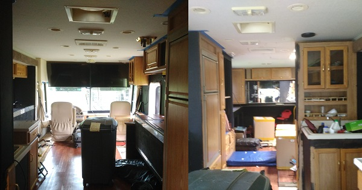

By {{ page.rollcall | array_to_sentence_string }}
Task: Covert a 1998 RV into the Dallas City of Learning Lab
The RV exterior

We have finished the majority of the renovation of the Dallas City of Learning Lab. We've finished rebuilding the roof, going throught the plumbing (including the suspiciously secretive water tank), and also replacing the entirety of the flooring.
to

The RV interior

to

A full tour of the RV pre-renovation can be found here.
Changes
- Removed restroom
- Replaced carpet with laminate
- Added widescreen TVs
- Added black workbenches
- Removed table
- Removed cabinet to make room for more technology
- Removed some 90s decor
- Removed bedside tables and cabinets
- Added 3D printer
- Removed bed
- Removed couch
- Removed 90s decals
- Added shelving
- Cleaned a decade of muck off of it
Reflections
We've put in >250 hours working on this RV. It's going to become a mobile robotics lab so that we can inspire kids to enter STEM-related careers and hobbies. Uaing this van, the team can reach out to children who otherwise would not have the oppurtunity to learn how to build and program robots, as well as gaining skills related to that, such as using a 3D printer.